📌 Chapter snapshot
- Chapter 7 of NCERT Class 10 Science (reprint 2026-27), in Unit II “World of Living”, which carries 25 marks in the 80-mark theory paper together with Life Processes, Control and Coordination, and Heredity.
- Most-asked in boards: diagrams (budding in Hydra, spore formation in Rhizopus, L.S. of flower, germination of pollen on stigma), pollination vs fertilisation, DNA stability through meiosis, and contraception.
- Want a shorter version? See our quick revision notes for this chapter.
Why do organisms reproduce?
Reproduction is the process by which living organisms produce new individuals of their own kind.
- Nutrition, respiration and excretion are needed to keep an individual alive. Reproduction is not: an individual can live its whole life without reproducing.
- Reproduction even costs the parent a lot of energy. So why do it? Because it keeps the species going after the individuals die.
- We notice a kind of organism only because there are large numbers of it. Those numbers come from reproduction.
- We say two organisms belong to the same species because they look similar: reproduction makes new individuals that look very much like the parents.
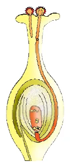
⭐ Exam line
Reproduction is not essential for the survival of an individual, but it is essential for the survival (continuity) of a species.
Do organisms create exact copies of themselves?
DNA: the blueprint of body design
- Organisms look similar because their body designs are similar, and body designs are similar because their blueprints are similar.
- The blueprint is the DNA (Deoxyribonucleic Acid) in the chromosomes of the nucleus. DNA is the information source for making proteins. Changed information → different proteins → altered body design.
- So the basic event in reproduction is the creation of a DNA copy.
How a cell makes a copy of itself
- The cell uses chemical reactions to build a copy of its DNA. Now there are two copies.
- Simply pushing one copy out would not work: it would have no cell structure to keep life going.
- So DNA copying goes along with making additional cellular apparatus.
- The two DNA copies separate, each with its own cellular apparatus: one cell divides into two.
Are the two cells identical?
No bio-chemical reaction is absolutely reliable, so DNA copying makes small variations each time. The copies are similar but not identical.
Drastic variation
Small variation
7.1.1 The importance of variation
- Populations fill well-defined places called niches in the ecosystem. Consistent DNA copying keeps the body design that suits that niche, so reproduction is linked to the stability of populations.
- But niches can change for reasons beyond the organism's control: temperature goes up or down, water levels change, meteorites hit.
- If everyone were identical, a drastic change could wipe out the whole population. If a few individuals carry variations, some may survive.
- NCERT example: bacteria in temperate water. If global warming heats the water, most die, but the few heat-resistant variants survive and multiply. Variation is useful for the survival of species over time, though not necessarily for every individual.
🌡️ Try it: why variation saves a species
Each dot is a bacterium. The number on it is the highest water temperature it can survive. Raise the water temperature and see who survives. Then try a population with no variation.
Modes of reproduction used by single organisms
The mode an organism uses depends on its body design. All the modes below create a new generation from a single individual: this is asexual reproduction.
| Mode | Who uses it | One-line idea |
|---|---|---|
| Binary fission | Amoeba, Leishmania, many bacteria and protozoa | One cell splits into two equal halves. |
| Multiple fission | Plasmodium (malarial parasite) | One cell divides into many daughter cells at the same time. |
| Budding | Yeast, Hydra | A small outgrowth (bud) forms, grows and separates. |
| Fragmentation | Spirogyra | The body breaks into pieces on maturing; each piece grows. |
| Regeneration | Hydra, Planaria | A cut piece grows into a complete organism. |
| Vegetative propagation | Bryophyllum, potato, money-plant, sugarcane, rose, grapes | Root, stem or leaf grows into a new plant. |
| Spore formation | Rhizopus (bread mould) | Sporangia release thick-walled spores. |
Activities 7.1 and 7.2: yeast and bread mould
Activity 7.1: Yeast in sugar solution, observed after 1–2 hours. What do you see?
Activity 7.2: Wet bread kept in a cool, moist, dark place for a week. What do you see?
🔎 Mode finder: tap an organism
Pick an organism to see how it reproduces and which NCERT figure shows it.
Fission
In unicellular organisms, cell division itself (fission) creates new individuals.
Binary fission
- Many bacteria and protozoa simply split into two equal halves.
- In Amoeba, the splitting can take place in any plane (Fig. 7.1 a). First the nucleus divides, then the cytoplasm.
- Leishmania (causes kala-azar) has a whip-like flagellum at one end, so binary fission happens in a definite orientation (lengthwise) in relation to this structure (Fig. 7.1 b).
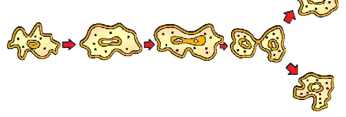
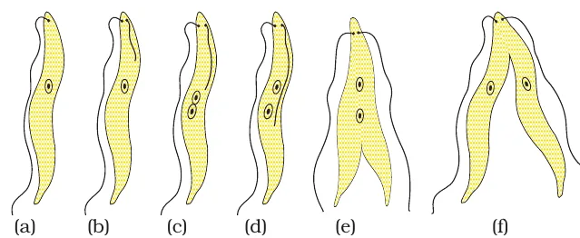
Multiple fission
- The malarial parasite Plasmodium divides into many daughter cells simultaneously.
- The nucleus divides many times, each nucleus gets some cytoplasm, and when the outer wall breaks, many daughter cells are released (Fig. 7.2).
- Often happens when conditions are unfavourable; a protective cover (cyst) forms around the cell.
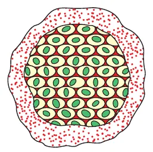
Activity 7.3: Compare a permanent slide of Amoeba with one showing binary fission.
7.2.2 Fragmentation
- Multicellular organisms with a simple body organisation can still use simple methods. Spirogyra (a green filamentous alga) simply breaks into smaller pieces on maturation; each fragment grows into a new individual.
- Why does this work? Activity 7.4 shows that Spirogyra filaments have no different tissues: every cell is alike and can do everything.
- Most multicellular organisms cannot divide cell-by-cell, because specialised cells form tissues, tissues form organs, and organs must be at definite positions. They need more complex ways, with reproduction done by a specific cell type that can grow, multiply and make other cell types.
Activity 7.4: Can you identify different tissues in the Spirogyra filaments?
Regeneration and budding
Regeneration
- Many fully differentiated organisms can give rise to new individuals from body parts. Hydra and Planaria can be cut into any number of pieces and each piece grows into a complete organism (Fig. 7.3).
- It is done by specialised cells that multiply into a mass of cells; these then change into different cell types and tissues in an organised sequence called development.
- Regeneration is not the same as reproduction: most organisms do not normally depend on being cut up to reproduce.
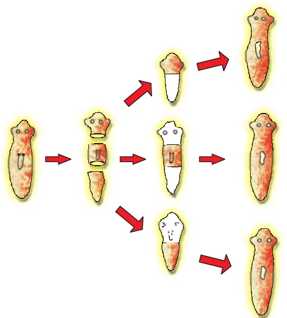
7.2.4 Budding
Hydra uses its regenerative cells for reproduction by budding. A bud develops as an outgrowth due to repeated cell division at one specific site. It develops into a tiny individual and, when fully mature, detaches from the parent and lives independently. Yeast also reproduces by budding.
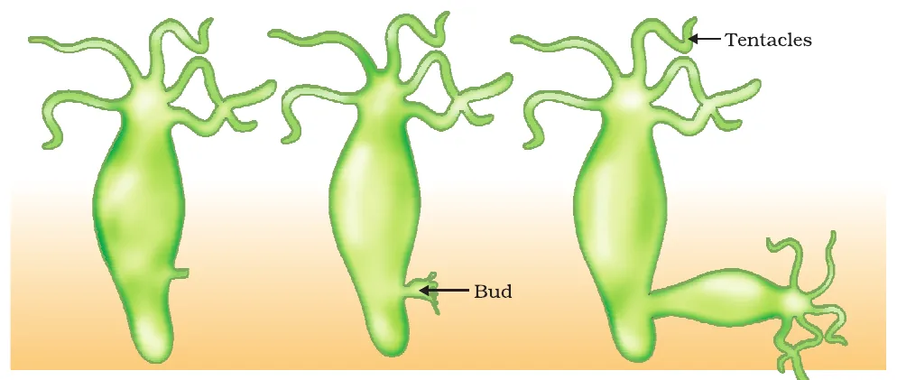
✍️ Diagram tip (asked in 2024 and 2025 boards)
Draw at least three stages: parent with a small bud, bud with tentacles, bud detaching. Label tentacles, bud and parent Hydra.
Vegetative propagation
In many plants, root, stem or leaves develop into new plants under suitable conditions. This is vegetative propagation. Methods like layering and grafting use it to grow sugarcane, roses and grapes.
- Bryophyllum: buds in the notches along the leaf margin fall on soil and grow into new plants (Fig. 7.5).
- Potato: the “eyes” (notches) on the tuber are buds that sprout.
- Money-plant: a stem piece with a node (leaf) grows roots.
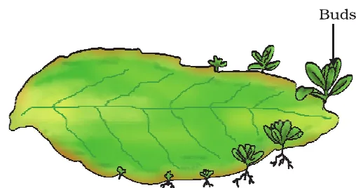
Advantages of vegetative propagation (learn all four)
- Plants bear flowers and fruits earlier than those grown from seeds.
- Plants that have lost the capacity to produce seeds (banana, orange, rose, jasmine) can be grown.
- All plants are genetically similar to the parent, so they keep all its desirable characters.
- It is quick, cheap and easy, e.g. sugarcane, rose, grapes.
Activity 7.5: Which potato pieces give rise to fresh green shoots and roots?
Activity 7.6: Money-plant pieces with a leaf vs pieces between two leaves. Which grow?
More to know: tissue culture
- Remove tissue or cells from the growing tip of a plant.
- Place them in an artificial medium; they divide rapidly into a small group of cells called callus.
- Move the callus to a medium with hormones for growth and differentiation; plantlets form.
- Plant the plantlets in soil to grow into mature plants.
Many plants can be grown from one parent in disease-free conditions. Commonly used for ornamental plants.
7.2.6 Spore formation
- In bread mould (Rhizopus), the thread-like structures are hyphae: they are not reproductive.
- The tiny blob-on-a-stick structures are reproductive: the blobs are sporangia, which contain spores.
- Each spore can develop into a new Rhizopus. Spores have thick walls that protect them until they reach another moist surface and can begin to grow.
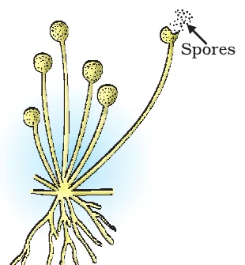
✍️ Diagram tip (asked in 2024 boards)
Label sporangium and spores as the reproductive parts, and hyphae as the non-reproductive part.
Sexual reproduction
Bulls alone cannot produce calves, nor hens alone chicks. When two individuals (male and female) are needed to produce a new generation, it is sexual reproduction.
7.3.1 Why the sexual mode of reproduction?
- Errors in DNA copying cause variations, which help a population survive. So it makes sense to generate more variation.
- But DNA copying is quite accurate, so variation builds up slowly. (Making it less accurate would kill many cells.)
- Each individual already carries variations accumulated over generations, all proven harmless because the individual is alive.
- Combining DNA from two individuals creates new combinations of variations quickly. That is what sexual reproduction does.
The problem of doubling DNA, and its solution
- If each new generation combined the full DNA of two parents, the DNA would double every generation and mess up the control of the cellular apparatus.
- Solution: special cell lineages in specialised organs make germ-cells (gametes) with half the chromosomes and half the DNA, by a cell division called meiosis.
- When two gametes fuse, the original number is re-established in the zygote. This keeps the DNA content of a species stable.
🧬 Try it: meiosis keeps the number constant
Pick an organism, then switch meiosis off to see what would happen without it.
Two kinds of gametes
- A zygote that grows into a complex organism needs stored energy (food).
- In very simple organisms the two germ-cells are alike. In complex ones they specialise: one is large with food stores (the female gamete, egg), the other is small and motile (the male gamete, sperm).
- Making these two types leads to differences in male and female reproductive organs and, in some cases, bodies.
Sexual reproduction in flowering plants
The reproductive parts of angiosperms are in the flower: sepals, petals, stamens and pistil. Stamens and pistil are the reproductive parts that contain the germ-cells. (Sepals protect the bud; petals attract pollinators.)
- ♂Stamen (male) = anther + filament. The anther makes yellowish pollen grains.
- ♀Pistil (female, centre) = stigma (sticky tip) + style (middle tube) + ovary (swollen base).
- 🥚The ovary contains ovules; each ovule has an egg cell.
| Unisexual flower | Bisexual flower |
|---|---|
| Has either stamens or pistil | Has both stamens and pistil |
| Papaya, watermelon | Hibiscus, mustard |
🌺 Tap a part of the flower
Tap each name to see where it is in Fig. 7.7 and what it does.
Pollination
Transfer of pollen from the anther to the stigma is pollination.
Self-pollination
Cross-pollination
Fertilisation
- Pollen lands on a suitable stigma.
- A pollen tube grows out of the pollen grain and travels through the style to the ovary.
- The male germ-cell moves down the tube into the ovule.
- It fuses with the female germ-cell (egg): this fusion is fertilisation, giving a zygote.
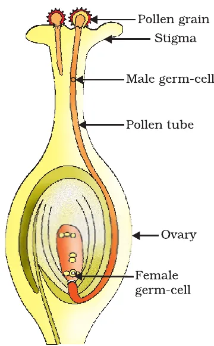
✍️ Asked in 2025 and 2026 boards
Draw Fig. 7.8 and label pollen grain, stigma, pollen tube, male germ-cell, ovary, female germ-cell. In 2025 the same figure came with parts marked A, B, C to identify.
After fertilisation
| Part | Becomes |
|---|---|
| Zygote | divides many times → embryo (inside the ovule) |
| Ovule | develops a tough coat → seed |
| Ovary | grows rapidly and ripens → fruit |
| Petals, sepals, stamens, style, stigma | may shrivel and fall off (sometimes the sepals persist, e.g. on brinjal and tomato) |
🌱 Step through: from pollen to seedling
Press Next to follow one pollen grain all the way to a new plant.
Germination
The seed contains the future plant, the embryo, which develops into a seedling under suitable conditions (water, air, warmth). This is germination.
- Plumule: future shoot.
- Radicle: future root.
- Cotyledon: food store for the growing embryo.
Advantages of seeds: a protective coat, stored food, they can wait (stay dormant) until conditions are right, and they can be dispersed far away.
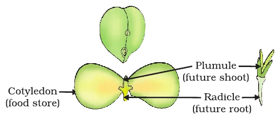
Activity 7.7: Soaked Bengal gram (chana) seeds cut open. Which parts do you see?
Reproduction in human beings
Humans use the sexual mode. As we grow, the body first just gets bigger (growth). In the early teenage years, a new set of changes appears that changes how the body looks: this is sexual maturation, and the period is puberty.
Changes in both boys and girls
Different in boys and girls
- These changes are slow (months and years), do not happen at an exact age, and differ from person to person.
- Why at this age? While the body is growing, resources go mainly to growth. As general growth slows, the reproductive tissues mature.
- New hair patterns etc. are signals that sexual maturation is happening. Special organs are needed to transfer germ-cells, and in mammals the female body and breasts mature to carry and later breast-feed a baby.
7.3.3 (a) Male reproductive system
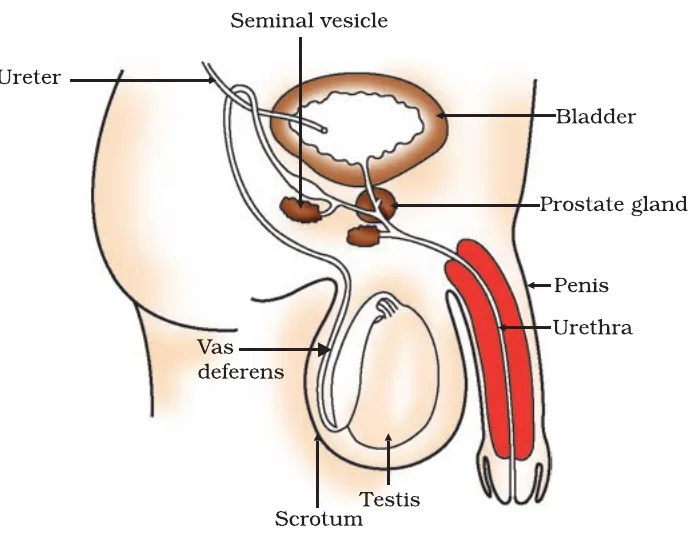
- 1Testes: make sperms and the hormone testosterone. They lie outside the abdomen in the scrotum because sperm formation needs a lower temperature than body temperature.
- 2Vas deferens: carries sperms; unites with the tube from the urinary bladder.
- 3Urethra: common passage for sperms and urine.
- 4Seminal vesicles and prostate gland: add secretions so sperms are in a fluid that eases transport and gives nutrition.
- 5Penis: organ for transferring sperms.
Testosterone regulates sperm formation and brings the changes seen in boys at puberty. Sperms are tiny bodies of mainly genetic material with a long tail to swim towards the egg.
7.3.3 (b) Female reproductive system
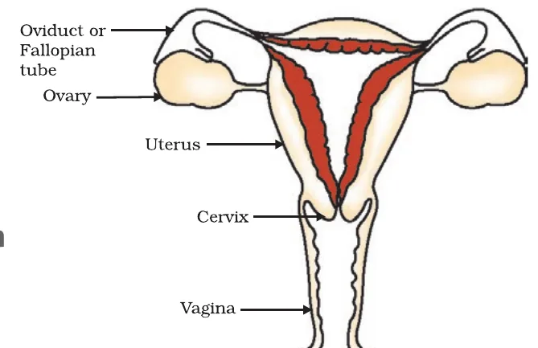
- 1Ovaries: make eggs and some hormones (oestrogen, progesterone). At birth they already hold thousands of immature eggs; from puberty one egg is released every month by one of the ovaries.
- 2Oviduct (fallopian tube): carries the egg to the uterus; site of fertilisation.
- 3Uterus: elastic bag where the two oviducts unite; the embryo implants and grows here.
- 4Cervix: the uterus opens into the vagina through it.
- 5Vagina: receives sperms; birth canal.
Fertilisation and development
- Sperms enter through the vagina during intercourse and travel up to the oviduct, where they may meet the egg.
- The fertilised egg (zygote) divides into a ball of cells, the embryo.
- The embryo is implanted in the thick, blood-rich lining of the uterus and develops organs to become a foetus.
- Nutrition comes through the placenta: a disc embedded in the uterine wall, with villi on the embryo's side and blood spaces on the mother's side. This gives a large surface area for glucose and oxygen to pass to the embryo, and for wastes to pass back into the mother's blood.
- Development takes about nine months. The child is born by rhythmic contractions of the uterus muscles.
7.3.3 (c) What happens when the egg is not fertilised?
The egg lives for about one day. Every month the uterus lining becomes thick and spongy to receive a fertilised egg. If there is no fertilisation, the lining is not needed: it slowly breaks down and comes out through the vagina as blood and mucous. This monthly cycle is menstruation, lasting about 2 to 8 days.
🧭 Game: put the journey in order
Tap the boxes in the correct order. A wrong tap shakes; keep going until the path is complete.
Reproductive health
- Some sexual maturation does not mean the body or mind is ready for sexual acts or for having and bringing up children.
- There can be pressure from friends, from family (to marry and have children) or from government agencies (to avoid children). Making choices can be difficult.
Sexually transmitted diseases (STDs)
| Bacterial | Viral |
|---|---|
| Gonorrhoea, syphilis | Warts, HIV-AIDS |
A condom on the penis during sex helps prevent the transmission of many of these infections to some extent.
Contraception: methods to avoid pregnancy
Pregnancy makes major demands on a woman's body and mind; if she is not ready, her health suffers. Contraceptive methods fall into categories:
🛡️ Tap a method
See how each method works, its drawback, and whether it also protects against STDs.
| Category | Examples | How it works | Drawback |
|---|---|---|---|
| Mechanical barrier | Condom; similar covering in the vagina | Sperm cannot reach the egg | Few; also protects against STDs |
| Hormonal (chemical) | Oral pills | Change hormonal balance so eggs are not released | Side-effects, as hormone balance changes |
| Intra-uterine devices | Loop, Copper-T | Placed in the uterus to prevent pregnancy | Side-effects from irritation of the uterus; no protection from STDs |
| Surgical | Vasectomy (vas deferens blocked), tubectomy (fallopian tube blocked) | Sperm transfer / egg movement is blocked | Safe in the long run, but surgery can cause infection if not done properly |
- Surgery can also remove unwanted pregnancies, but it is misused for illegal sex-selective abortion of female foetuses. Prenatal sex determination is prohibited by law. For a healthy society the female-male sex ratio must be maintained.
- Birth and death rates decide population size. A growing population makes it harder to raise living standards, but if inequality is the main reason for poor living standards, population size is relatively less important.
Differences to learn (3-mark favourites)
Asexual vs sexual reproduction
| Asexual | Sexual |
|---|---|
| One parent | Two parents (male and female) |
| No gametes, no fertilisation | Gametes form (by meiosis) and fuse |
| Offspring nearly identical to the parent | Offspring show more variation |
| Fast; many offspring | Slower |
| Amoeba, Hydra, Bryophyllum | Flowering plants, humans |
Binary vs multiple fission
| Binary fission | Multiple fission |
|---|---|
| Parent divides into two daughter cells | Parent divides into many daughter cells at once |
| Nucleus divides once | Nucleus divides many times |
| Usually in favourable conditions | Often in unfavourable conditions, inside a cyst |
| Amoeba, Leishmania | Plasmodium |
Pollination vs fertilisation (asked in 2026)
| Pollination | Fertilisation |
|---|---|
| Transfer of pollen from anther to stigma | Fusion of male and female germ-cells |
| Happens first | Happens after pollination |
| Outside the ovary (on the stigma) | Inside the ovule, in the ovary |
| Needs agents like wind, water, animals (for cross) | Needs a pollen tube to carry the male germ-cell |
| Result: pollen on stigma | Result: zygote |
Self vs cross-pollination (asked in 2023 and 2025)
| Self-pollination | Cross-pollination |
|---|---|
| Pollen to stigma of the same flower or another flower of the same plant | Pollen to stigma of a flower on a different plant (same species) |
| No external agent needed | Needs wind, water or animals |
| Little variation | Brings genetic variation |
Memory tricks
Amoeba vs Leishmania any vs definite
Amoeba splits in Any plane; Leishmania splits Lengthwise (definite plane) because of its flagellum.
Plasmodium P = Plenty
Plasmodium makes Plenty of daughters at once: multiple fission.
Hydra does two H = 2
Hydra: budding and regeneration. Planaria: regeneration. Yeast: budding.
Pistil top to bottom S S O
Stigma, Style, Ovary: “Sticky Straw to the Oven”.
What becomes what big → big
Bigger word ovary → bigger thing, fruit. Smaller ovule → smaller seed.
Male glands SPerm helpers
Seminal vesicles + Prostate add fluid: easier transport + nutrition.
Copper-T and STDs T ≠ protecTion
Only condoms (barriers) give some STD protection. Copper-T, pills and surgery do not.
Previous year board questions
These questions come from the CBSE Class 10 Science board papers of the years shown, with the paper code (set) and marks. Tap a question to see a model answer.
Where a question had options or a diagram we could not check word for word, it is reworded and marked so. The years and marks shown are only those we could confirm from the paper or the official marking scheme.
2026 · 31/1/1 · 2 marksDraw a neat diagram to show germination of pollen on the female reproductive part of the flower.
2026 · 31/1/1 · 2 marks (OR)List any two differences between pollination and fertilisation.
2026 · 31/1/1 · 1 mark (reworded)Identify the correct statement about reproduction in Spirogyra, Leishmania and Hydra.
2026 · 31/1/1, Q16 (also in set 31/1/3), 1 mark each: “Given below is a certain situation. Analyse it and describe its possible impact.”
2026 · 1 markThe sperm encounters the egg when it reaches the oviduct in human females.
2026 · 1 markSelf-pollination does not occur in a flower that contains only pistil.
2026 · 1 markEgg does not get fertilised in a human female.
2026 · 1 markThe seed is placed under appropriate conditions of water and air in the soil.
2026 · 1 mark (OR)Spores are liberated from the blob-like structures of the bread mould.
2026 · 1 mark (OR)What happens when a Bryophyllum leaf falls on wet soil?
2026 · 1 mark (OR)A pollen grain from a different species lands on the stigma of a totally unrelated species.
2026 · 1 mark (OR)Copper-T is placed in the uterus of a human female.
2026 · 1 mark (OR)Spirogyra breaks into smaller fragments upon maturation.
2025 · 31/1/1 · 1 mark (reworded)Which statements are true for a bisexual flower?
2025 · 31/1/1 · 2 marksDraw labelled diagrams to show different stages of budding in Hydra.
2025 · 31/1/1 · 3 marks(a) What are chromosomes? (b) Explain in brief how stability of DNA content of a species is ensured in sexually reproducing organisms.
2025 · 31/1/1 · 5 marks(i) Write the functions of the following parts of the human female reproductive system: (I) Ovary (II) Fallopian tube (III) Uterus. (ii) State briefly two contraceptive methods used by human males.
(ii) Condom: a mechanical barrier on the penis, so sperms do not reach the egg (also gives some protection from STDs). Vasectomy: the vas deferens is blocked by surgery, so sperms cannot pass through.
2025 · 31/1/1 · 5 marks (OR)(i) Differentiate between self-pollination and cross-pollination. (ii) Identify A, B and C in the given diagram (pollen germinating on the stigma) and write one function of each.
(ii) Based on Fig. 7.8: A = stigma: receives pollen and lets it germinate. B = pollen tube: carries the male germ-cell through the style to the ovule. C = female germ-cell (egg): fuses with the male germ-cell to form the zygote.
2024 · 31/1/1 · 1 markIn which organism is multiple fission a means of asexual reproduction?
2024 · 31/1/1 · 5 marks(i) Name three techniques/devices used by human females to avoid pregnancy. (ii) What will happen if in a human female (a) fertilisation takes place, (b) an egg is not fertilised?
(ii) (a) The zygote forms an embryo that is implanted in the uterus: pregnancy, with nourishment through the placenta. (b) The thick uterine lining breaks down and comes out as blood and mucous: menstruation.
2024 · 31/1/1 · 5 marks (OR)(i) Draw a diagram showing spore formation in Rhizopus and label the (a) reproductive and (b) non-reproductive parts. Why does Rhizopus not grow on dry bread? (ii) Name and explain the process by which reproduction takes place in Hydra.
(ii) Budding: a bud forms as an outgrowth by repeated cell division at one specific site (using regenerative cells), grows into a tiny Hydra with tentacles, and when mature detaches to live independently.
2023 · 31/1/1 · 5 marks (reworded)(a) Name the non-reproductive parts of a flower. (b) Distinguish between self-pollination and cross-pollination, and give two points of significance of pollination. (c) What do the ovule and the ovary develop into after fertilisation?
(b) Self-pollination: transfer of pollen from anther to stigma in the same flower or another flower of the same plant. Cross-pollination: transfer of pollen from the anther of one flower to the stigma of a flower on a different plant. Significance (any two): necessary for fertilisation and seed formation; stimulates fruit development; cross-pollination brings genetic variation.
(c) Ovule → seed; ovary → fruit.
Board-pattern practice
Extra questions in the current CBSE pattern (not from a specific year). Tap to check.
Assertion–Reason (1 mark each)
(a) Both A and R are true, and R explains A. (b) Both true, but R does not explain A. (c) A true, R false. (d) A false, R true.
1A: Testes are located outside the abdominal cavity in the scrotum. R: Sperm formation requires a lower temperature than normal body temperature.
2A: Spirogyra reproduces by fragmentation. R: Spirogyra has a simple body without specialised tissues.
3A: Regeneration is a common mode of reproduction in most animals. R: Planaria can regenerate from small pieces.
4A: Plants raised by vegetative propagation bear flowers and fruits earlier. R: They are produced from seeds.
5A: The urethra is a common passage for urine and sperms. R: The vas deferens unites with a tube coming from the urinary bladder.
6A: Copper-T protects against sexually transmitted diseases. R: Copper-T is placed in the uterus to prevent pregnancy.
Case-based (4 marks)
C1A student kept a moist slice of bread in a dark cupboard. After a few days, white threads with black dots appeared. (i) Name the organism. (ii) Name its mode of reproduction. (iii) What are the black dots? (iv) Why did the same experiment fail with dry bread?
C2The placenta is a disc embedded in the uterine wall with villi on the embryo's side and blood spaces on the mother's side. (i) What is the role of the villi? (ii) Name two substances passed from mother to embryo. (iii) How are the embryo's wastes removed? (iv) How long does development take?
Long answer (5 marks)
L1Draw a labelled diagram of the longitudinal section of a flower and explain how a seed and fruit are formed after pollination.
Name the mode
Read the example and pick the mode.
What you have learnt
- Reproduction is not essential to keep an individual alive; it keeps the species going.
- Reproduction involves making a DNA copy and additional cellular apparatus. Copying is not perfect, so variations arise; they help species survive changes in their niche.
- The mode depends on body design. Fission (binary: Amoeba, Leishmania; multiple: Plasmodium), fragmentation (Spirogyra), regeneration (Planaria, Hydra), budding (Hydra, yeast), vegetative propagation (Bryophyllum, potato), spores (Rhizopus): all asexual.
- Sexual reproduction combines DNA from two individuals and gives more variation. Meiosis halves the chromosomes in gametes; fertilisation restores the number.
- Flower: stamen (anther + filament) and pistil (stigma + style + ovary). Pollination (anther → stigma) then fertilisation (via pollen tube). Ovule → seed, ovary → fruit.
- Puberty brings sexual maturation. Male: testes, vas deferens, seminal vesicles, prostate, urethra, penis. Female: ovaries, fallopian tubes, uterus, cervix, vagina. Fertilisation in the fallopian tube; nourishment through the placenta; no fertilisation → menstruation.
- Contraception: condoms, oral pills, Copper-T, surgery. Condoms also reduce STD spread. Sex-selective abortion is illegal; the sex ratio must be maintained.
Test yourself
Tap an answer. Score: 0 / 15
1. Asexual reproduction takes place through budding in (NCERT Ex. 1)
Yeast puts out small buds that separate and grow.
2. Which is not a part of the female reproductive system? (NCERT Ex. 2)
Vas deferens carries sperms in males.
3. The anther contains (NCERT Ex. 3)
The anther of the stamen makes pollen.
4. Binary fission in a definite orientation occurs in
Leishmania's whip-like structure fixes the plane of division.
5. Leishmania causes
Plasmodium causes malaria.
6. Spirogyra reproduces by
It breaks into pieces on maturing.
7. In Rhizopus, the non-reproductive thread-like parts are
Sporangia hold the spores; hyphae are not reproductive.
8. A plant that has lost the capacity to produce seeds is
Banana, orange, rose, jasmine are grown vegetatively.
9. In tissue culture, the mass of rapidly dividing cells is called
The callus is then given hormones to form plantlets.
10. If human body cells have 46 chromosomes, a sperm has
Meiosis halves the number.
11. After fertilisation, the ovary develops into the
Ovule → seed, ovary → fruit.
12. The future shoot in a seed is the
Radicle = future root; cotyledon = food store.
13. In human females, fertilisation takes place in the
Sperms meet the egg in the oviduct.
14. Which gland adds fluid to sperms?
Prostate and seminal vesicles.
15. Syphilis is a
Gonorrhoea and syphilis are bacterial; warts and HIV-AIDS are viral.
Answers to all questions
Tap a question to see the answer. Use Print or save as PDF at the top to get all answers open.